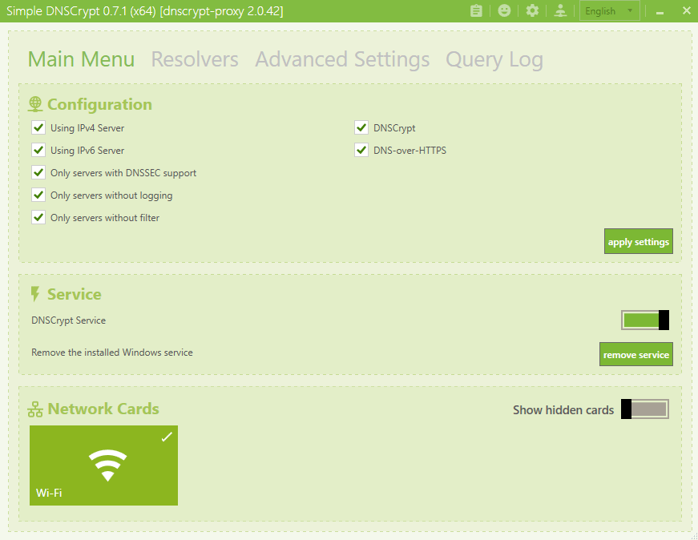
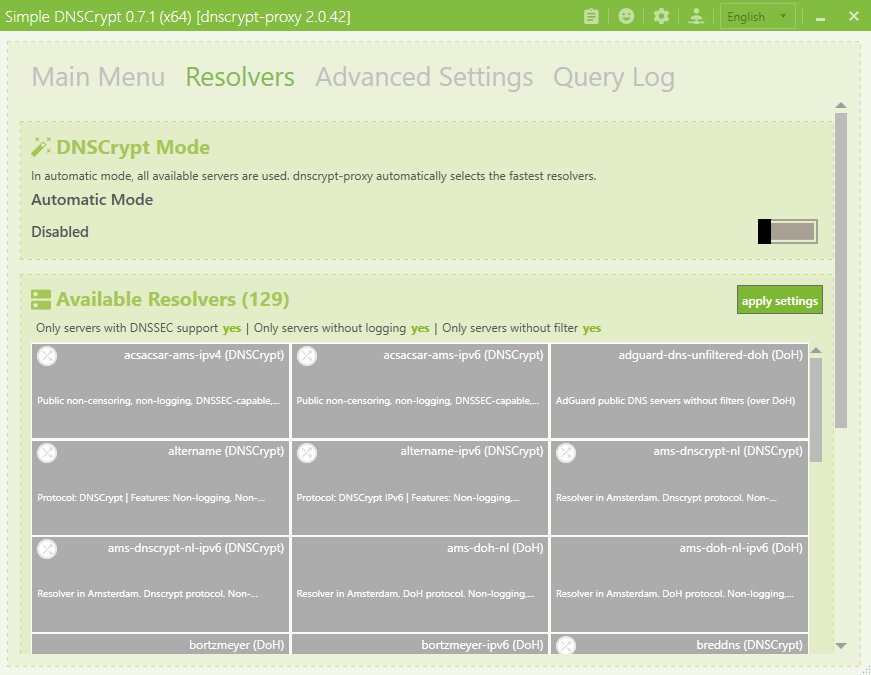
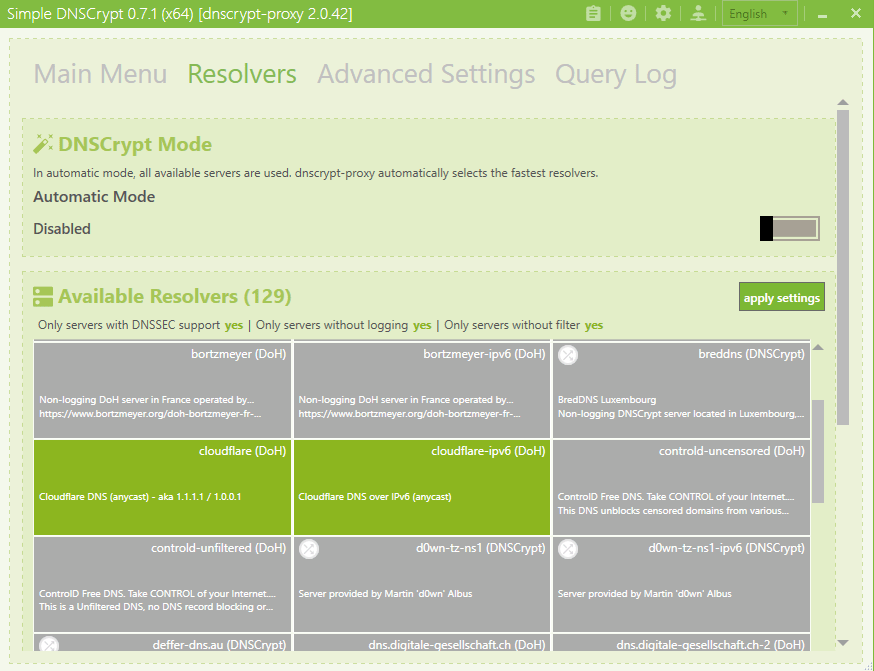
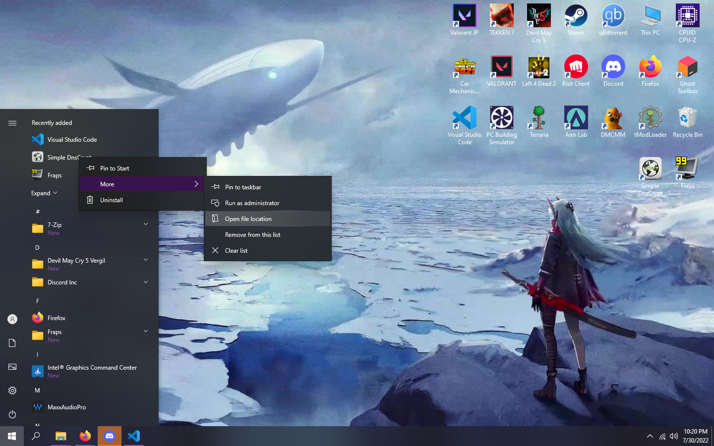
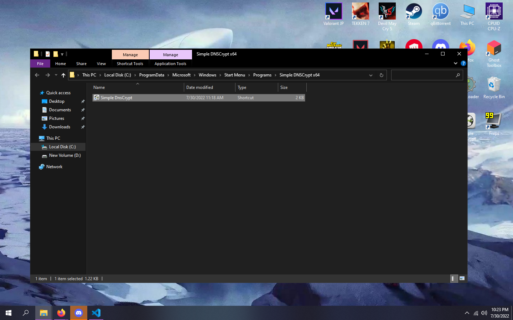
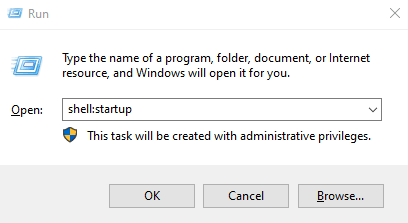
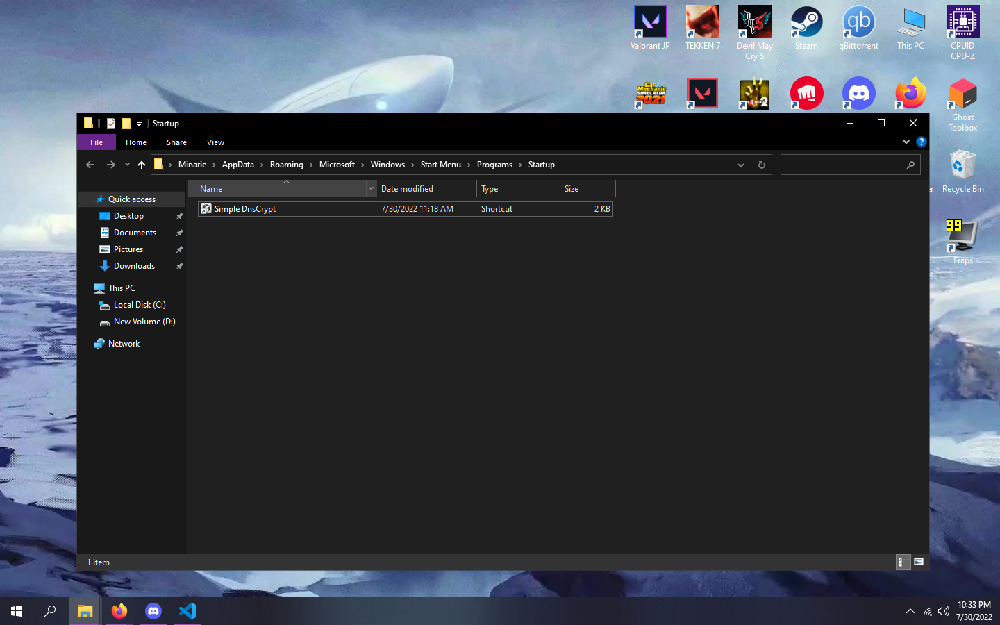

You might be wondering why i made this page at first. An introduction, shall we?
Hello, my name is Justyn Anthonyo. For others, you may know me more as Bunta or Minarie. I am an Informatics Engineering student at Institute of Business and Technology Pelita Indonesia.
That was.. short(?) but anyways, I know, those apes.. has been acting up, no?, I heard ya' can't boot up Steam and such right now. But fret not, Papa Jus is here to fix that issue easily.
First, get yourself the Simple DNSCrypt client.
Get the x64 .msi, and install it.
Just press next a buncha' times until it's done installing.
Launch the app, you should be greeted with this screen:
Next, turn on the DNSCrypt Service, click on your currently connected network card and tick Using IPv6 Server, click on apply settings
DO NOT CLICK ON REMOVE SERVICE.
After that, hop over to the Resolvers menu, you should now see this:
Select both ipv4 and ipv6 CLoudflare DNS Resolvers, make sure they are green after you select it and then apply settings. It should look like this:
After all of that, you are done.... basically. However, you would need to boot up the app everytime to start the DoH proxy every restart / after boot.
We can fix that however, follow these steps.
Click on the Windows start menu, and find the DNSCrypt shortcut.
Right click on the shortcut, click on More and Open File Location.
After that, copy the shortcut inside the folder
Press the Windows Key + R to open the run menu
type/copy -> shell:startup in the Run menu
A folder should now open
Paste your DNSCrypt shortcut inside the Startup folder
DNSCrypt now should autostart every boot.
Aaaand... that is it. You now can open Steam, Reddit and many more.
#downwiththeblockade